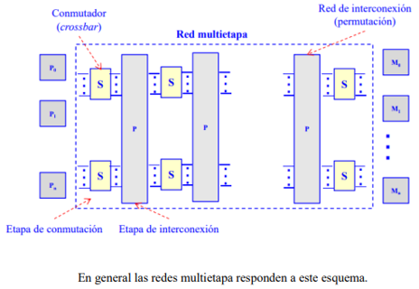

La computación paralela es una disciplina que se ocupa de realizar cálculos o tareas
simultáneamente
utilizando múltiples recursos de procesamiento. En lugar de ejecutar una sola tarea en una
computadora secuencial, la computación paralela divide la carga de trabajo en varias partes
más
pequeñas y las procesa al mismo tiempo en diferentes unidades de procesamiento, como núcleos
de CPU
o computadoras interconectadas.
Los aspectos básicos de la computación paralela incluyen:
-Granularidad: se refiere al tamaño de las tareas en paralelo. Puede ser gruesa, cuando las
tareas
son grandes y se dividen en subprocesos independientes, o fina, cuando las tareas se dividen en
partes más pequeñas que se ejecutan en paralelo.
-Comunicación: es fundamental en la computación paralela, ya que los diferentes
procesos o
unidades
de procesamiento deben intercambiar información. La comunicación puede ser a
través de la memoria
compartida o mediante el paso de mensajes.
-Sincronización: se refiere a la coordinación de los procesos en paralelo. Es
necesario
asegurarse de
que los procesos se ejecuten en el orden adecuado y que la información compartida se
sincronice
correctamente.
Paralelismo a nivel de bit
Desde el advenimiento de la integración a gran escala (VLSI) como tecnología de
fabricación de chips
de computadora en la década de 1970 hasta alrededor de 1986, la aceleración en la
arquitectura de
computadores se lograba en gran medida duplicando el tamaño de la palabra en la computadora, la
cantidad de información que el procesador puede manejar por ciclo.
Históricamente, los microprocesadores de 4 bits fueron sustituidos por unos de 8 bits, luego
de 16
bits y 32 bits, esta tendencia general llegó a su fin con la introducción de
procesadores de 64
bits, lo que ha sido un estándar en la computación de propósito general durante
la última década.
Paralelismo a nivel de instrucción
Los procesadores modernos tienen ''pipeline'' de instrucciones de varias etapas. Cada etapa en el
pipeline corresponde a una acción diferente que el procesador realiza en la
instrucción
correspondiente a la etapa; un procesador con un pipeline de N etapas puede tener hasta n
instrucciones diferentes en diferentes etapas de finalización.
Paralelismo de datos
El paralelismo de datos es el paralelismo inherente en programas con ciclos, que se centra en la
distribución de los datos entre los diferentes nodos computacionales que deben tratarse en
paralelo.
Muchas de las aplicaciones científicas y de ingeniería muestran paralelismo de datos.

Una dependencia de terminación de ciclo es la dependencia de una iteración de un ciclo
en la salida
de una o más iteraciones anteriores. Las dependencias de terminación de ciclo evitan
la
paralelización de ciclos.
Paralelismo de tareas
Es un paradigma de la programación concurrente que consiste en asignar distintas tareas a
cada uno
de los procesadores de un sistema de cómputo. En consecuencia, cada procesador
efectuará su propia
secuencia de operaciones. En su modo más general, el paralelismo de tareas se representa
mediante un
grafo de tareas, el cual es subdividido en subgrafos que son luego asignados a diferentes
procesadores.
Las computadoras paralelas se pueden clasificar de acuerdo con el nivel en el que el hardware
soporta paralelismo. Esta clasificación es análoga a la distancia entre los nodos
básicos de
cómputo. Estos no son excluyentes entre sí, por ejemplo, los grupos de
multiprocesadores simétricos
son relativamente comunes.
COMPUTACIóN MULTINúCLEO
Un procesador multinúcleo es un procesador que incluye múltiples unidades de
ejecución (núcleos) en
el mismo chip. Un procesador multinúcleo puede ejecutar múltiples instrucciones por
ciclo de
secuencias de instrucciones múltiples.
MULTIPROCESAMIENTO SIMéTRICO
Un multiprocesador simétrico (SMP) es un sistema computacional con múltiples
procesadores idénticos
que comparten memoria y se conectan a través de un bus. La contención del bus previene
el escalado
de esta arquitectura.
COMPUTACIóN EN CLúSTER
Un clúster es un grupo de ordenadores débilmente acoplados que trabajan en estrecha
colaboración, de
modo que en algunos aspectos pueden considerarse como un solo equipo.
PROCESAMIENTO PARALELO MASIVO
Tienden a ser más grandes que los clústeres, con «mucho más» de 100
procesadores. En un MPP, cada
CPU tiene su propia memoria y una copia del sistema operativo y la aplicación.
COMPUTACIóN DISTRIBUIDA
La computación distribuida es la forma más distribuida de la computación
paralela. Se hace uso de
ordenadores que se comunican a través de la Internet para trabajar en un problema dado.
COMPUTADORAS PARALELAS ESPECIALIZADAS
Dentro de la computación paralela, existen dispositivos paralelos especializados que generan
interés. Aunque no son específicos para un dominio, tienden a ser aplicables
sólo a unas pocas
clases de problemas paralelos.
CóMPUTO RECONFIGURABLE CON ARREGLOS DE COMPUERTAS PROGRAMABLES
El cómputo reconfigurable es el uso de un arreglo de compuertas programables (FPGA) como
coprocesador de un ordenador de propósito general.
CóMPUTO DE PROPóSITO GENERAL EN UNIDADES DE PROCESAMIENTO GRáFICO
(GPGPU)
Es una tendencia relativamente reciente en la investigación de ingeniería
informática. Los GPUs son
co-procesadores que han sido fuertemente optimizados para procesamiento de gráficos por
computadora.
CIRCUITOS INTEGRADOS DE APLICACIóN ESPECíFICA
Debido a que un ASIC (por definición) es específico para una aplicación dada,
puede ser
completamente optimizado para esa aplicación. Como resultado, para una aplicación
dada, un ASIC
tiende a superar a un ordenador de propósito general.
PROCESADORES VECTORIALES
Pueden ejecutar la misma instrucción en grandes conjuntos de datos. Tienen operaciones de
alto nivel
que trabajan sobre arreglos lineales de números o vectores.
La arquitectura de computadoras secuenciales es el modelo tradicional de procesamiento secuencial en
el que las instrucciones se ejecutan una tras otra en un único hilo de ejecución. La CPU sigue un
flujo de control secuencial y ejecuta las instrucciones en orden.
Este tipo de arquitectura se basa en el modelo de Von Neumann, que consta de una unidad de control,
una unidad aritmético-lógica, una memoria principal y dispositivos de entrada/salida. Los programas
secuenciales se dividen en instrucciones que se cargan desde la memoria y se ejecutan una tras otra.
En los sistemas de computación paralela, la organización de las direcciones de memoria es un aspecto
importante a considerar. Permite acceder a los datos y las instrucciones almacenadas en la memoria.
Hay diferentes esquemas de organización de direcciones de memoria, como la memoria distribuida, en
la que cada unidad de procesamiento tiene su propia memoria local, y la memoria compartida, en la
que varias unidades de procesamiento comparten la misma memoria.
Los sistemas de memoria compartida son aquellos en los que múltiples unidades de procesamiento
comparten un espacio de direcciones de memoria común. Esto permite a los procesos comunicarse y
compartir datos a través de la memoria compartida, lo que simplifica la programación paralela.

ESTRUCTURA DE LOS MULTIPROCESADORES DE MEMORIA COMPARTIDA
La mayoría de los multiprocesadores comerciales son del tipo UMA (Uniform Memory Access): todos los
procesadores tienen igual tiempo de acceso a la memoria compartida. En la arquitectura UMA los
procesadores se conectan a la memoria a través de un bus, una red multietapa o un conmutador de
barras cruzadas (red multietapa o un conmutador de barras cruzadas (crossbar crossbar) y disponen de
su propia ) y disponen de su propia memoria caché. Los procesadores tipo NUMA (Non Uniform Memory
Access) presentan tiempos de acceso a la memoria compartida que dependen de la ubicación del
elemento de proceso y la memoria.
En el contexto de la arquitectura de computadoras, las redes de interconexión dinámicas o indirectas
se refieren a los esquemas utilizados para conectar y comunicar los componentes de un sistema
computacional, como procesadores, memoria y dispositivos de entrada/salida. Estas redes proporcionan
una forma flexible y eficiente de transferir datos entre los distintos elementos del sistema.
Un ejemplo común de una red de interconexión dinámica en arquitectura de computadoras es el sistema
de interconexión utilizado en los supercomputadores. Estos sistemas están diseñados para realizar
tareas computacionalmente intensivas y requieren una alta capacidad de procesamiento y comunicación
entre los nodos.
En lugar de utilizar una arquitectura de bus tradicional, donde todos los componentes están
conectados directamente a un único bus compartido, los supercomputadores suelen emplear
arquitecturas de red más complejas. Estas arquitecturas utilizan enlaces de comunicación de alta
velocidad, como redes toroidales, redes en malla o redes hipercúbicas, para interconectar los nodos
de procesamiento y almacenamiento.
En una red de interconexión dinámica, los nodos pueden comunicarse indirectamente mediante saltos a
través de otros nodos intermedios. Esto permite una comunicación eficiente y escalable en sistemas
con un gran número de componentes. Además, estas redes suelen ser adaptables, lo que significa que
pueden reconfigurarse dinámicamente para adaptarse a cambios en la carga de trabajo o a fallos en
los nodos.
Es un tipo de arquitectura de red en la que múltiples dispositivos comparten un medio de
comunicación
común para enviar y recibir datos. En esta arquitectura, los dispositivos se conectan físicamente al
mismo medio de transmisión, como un cable o una línea de transmisión, y deben coordinarse para
acceder al medio y transmitir sus datos.
Un ejemplo común de una red de medio compartido en arquitectura de computadoras es Ethernet, que
utiliza un cable compartido o un segmento de red para conectar múltiples dispositivos, como
computadoras, servidores o impresoras. En Ethernet, los dispositivos utilizan un protocolo llamado
CSMA/CD (Acceso Múltiple por Detección de Portadora con Detección de Colisiones) para gestionar el
acceso al medio compartido.
En una red de medio compartido, los dispositivos deben seguir ciertas reglas para evitar colisiones
de datos cuando intentan transmitir al mismo tiempo. El protocolo CSMA/CD utilizado en Ethernet
permite que los dispositivos "escuchen" el medio antes de transmitir. Si un dispositivo detecta que
el medio está ocupado por otra transmisión, espera un período de tiempo aleatorio antes de volver a
intentar transmitir. Si dos dispositivos intentan transmitir al mismo tiempo y se produce una
colisión, ambos dispositivos interrumpen la transmisión y esperan un tiempo aleatorio antes de
volver a intentarlo.
Aunque las redes de medio compartido como Ethernet son ampliamente utilizadas y ofrecen una solución
económica para conectar múltiples dispositivos, también presentan algunas limitaciones. El
rendimiento de la red puede verse afectado a medida que aumenta el número de dispositivos conectados
y las colisiones se vuelven más probables. Además, debido a que todos los dispositivos comparten el
mismo medio, el ancho de banda disponible se divide entre los dispositivos, lo que puede limitar la
velocidad de transmisión.
CONEXIÓN POR CONMUTADORES CROSSBAR
Cada procesador (Pi) y cada módulo de memoria (Mi) tienen su propio bus. Existe un conmutador (S) en
los puntos de intersección que permite conectar un bus de memoria con un bus de procesador. Para
evitar conflictos cuando más de un procesador pretende acceder al mismo módulo de memoria se
establece un orden de prioridad. Se trata de una red sin bloqueo con una conectividad completa pero
de alta complejidad.

CONEXIÓN POR RED MULTIETAPA
- Representan una alternativa intermedia de conexión entre el bus y el crossbar.
- Es de menor complejidad que el crossbar pero mayor que el bus simple.
- La conectividad es mayor que la del bus simple pero menor que la del crossbar.
- Se compone de varias etapas alternativas de conmutadores simples y redes de interconexión.

Los sistemas de memoria distribuida o multicomputadores pueden ser de dos tipos básicos. El primer
de ellos consta de un único computador con múltiples CPUs comunicadas por un bus de datos mientras
que en el segundo se utilizan múltiples computadores, cada uno con su propio procesador, enlazados
por una red de interconexión más o menos rápida.
Sobre los sistemas de multicomputadores de memoria distribuida, se simula memorias compartidas. Se
usan los mecanismos de comunicación y sincronización de sistemas multiprocesadores.
Un clúster es un tipo de arquitectura paralela distribuida que consiste de un conjunto de
computadores independientes interconectados operando de forma conjunta como único recurso
computacional sin embargo, cada computador puede utilizarse de forma independiente o separada.
En esta arquitectura, el computador paralelo es esencialmente una colección de procesadores
secuenciales, cada uno con su propia memoria local, que pueden trabajar conjuntamente.
Cada nodo tiene rápido acceso a su propia memoria y acceso a la memoria de otros nodos mediante una
red de comunicaciones, habitualmente una red de comunicaciones de alta velocidad.
Los datos son intercambiados entre los nodos como mensajes a través de la red.
Una red de ordenadores, especialmente si disponen de una interconexión de alta velocidad, puede ser
vista como un multicomputador de memoria distribuida y como tal ser utilizada para resolver
problemas mediante computación paralela.
Los multicomputadores utilizan redes estáticas con enlaces directos entre nodos. Cuando un nodo
recibe un mensaje lo procesa si viene dirigido a dicho nodo. Si el mensaje no va dirigido al nodo
receptor lo reenvía a otro por alguno de sus enlaces de salida siguiendo un protocolo de
encaminamiento.

Propiedades más significativas
-Topología de la red: determina el patrón de interconexión entre nodos.
-Diámetro de la red: distancia máxima de los caminos más cortos entre dos nodos de la red.
-Latencia: retardo de tiempo en el peor caso para un mensaje transferido a través de la red.
-Ancho de banda: Transferencia máxima de datos en Mbytes/segundo.
-Escalabilidad: posibilidad de expansión modular de la red.
-Grado de un nodo: número de enlaces o canales que inciden en el nodo.
-Algoritmo de encaminamiento: determina el camino que debe seguir un mensaje desde el nodo emisor al
nodo receptor.
Simulación de sistemas físicos complejos: La computación paralela se utiliza ampliamente en la
simulación de sistemas físicos complejos, como el clima y la física de partículas. En el campo de la
climatología, los modelos numéricos requieren un alto grado de paralelismo para simular el
comportamiento atmosférico a gran escala. Los supercomputadores paralelos se utilizan para ejecutar
modelos climáticos y proporcionar pronósticos meteorológicos precisos.
En la física de partículas, experimentos como el Gran Colisionador de Hadrones (LHC) generan grandes
cantidades de datos. La computación paralela se utiliza para procesar y analizar estos datos,
buscando patrones y partículas subatómicas. Los sistemas de memoria distribuida son especialmente
útiles en este caso, ya que permiten el procesamiento en paralelo de grandes volúmenes de datos.
Minería de datos y aprendizaje automático: Con el crecimiento masivo de los conjuntos de datos en
diversos campos, la computación paralela se ha convertido en una herramienta esencial para la
minería de datos y el aprendizaje automático. Algoritmos como el aprendizaje profundo requieren una
gran cantidad de cálculos intensivos que se pueden acelerar enormemente mediante la computación
paralela.
Los sistemas de memoria compartida y distribuida se utilizan para entrenar modelos de aprendizaje
automático en paralelo, dividiendo los datos y las tareas de procesamiento entre múltiples
procesadores. Esto permite realizar el entrenamiento más rápido y manejar grandes conjuntos de datos
de manera eficiente.
Renderización de gráficos en tiempo real: En la industria de los videojuegos y la simulación, la
renderización de gráficos en tiempo real es esencial para lograr una experiencia visual fluida y
realista. La computación paralela se utiliza en el procesamiento gráfico para acelerar los cálculos
complejos necesarios para generar imágenes y efectos visuales en tiempo real.
Las tarjetas gráficas (GPU) se utilizan comúnmente en la renderización paralela, ya que están
diseñadas específicamente para ejecutar múltiples tareas en paralelo. Los desarrolladores de juegos
y software de renderización aprovechan la capacidad de las GPUs para dividir las tareas de
renderización entre múltiples hilos y procesadores, lo que permite una renderización rápida y
eficiente de escenas complejas en tiempo real.
Estos son solo algunos ejemplos de casos de estudio en los que la computación paralela ha demostrado
ser invaluable. En general, la computación paralela se utiliza en cualquier campo que requiera un
procesamiento intensivo y rápido de datos, como la investigación científica, la simulación de
sistemas complejos, el análisis de grandes conjuntos de datos y la generación de gráficos en tiempo
real.